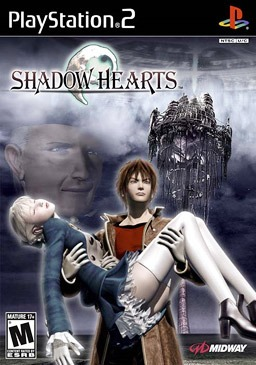

Sinopse
Shadow Hearts é um RPG com um enredo que mistura mitologia, história e elementos sobrenaturais. A história segue Yuri, um jovem com o poder de controlar as sombras, enquanto ele se junta a uma série de personagens únicos e enfrentam forças malignas em uma trama cheia de mistério e aventura.
Com um combate por turnos inovador, que envolve o uso do "Judgement Ring" para realizar ataques especiais, o jogo mistura o tradicional estilo de RPG com um toque de terror gótico e um enredo envolvente, que vai prender os jogadores do início ao fim.
Características Principais
- Combate por turnos com o inovador sistema "Judgement Ring"
- Personagens carismáticos e uma narrativa envolvente
- Exploração em diversos cenários, com um mundo repleto de mistérios e segredos
- Elementos de terror gótico misturados com mitologia e folclore
- Sistema de evolução de personagens e personalização de habilidades
- Trilha sonora impactante e atmosfera imersiva
Imagens Adicionais